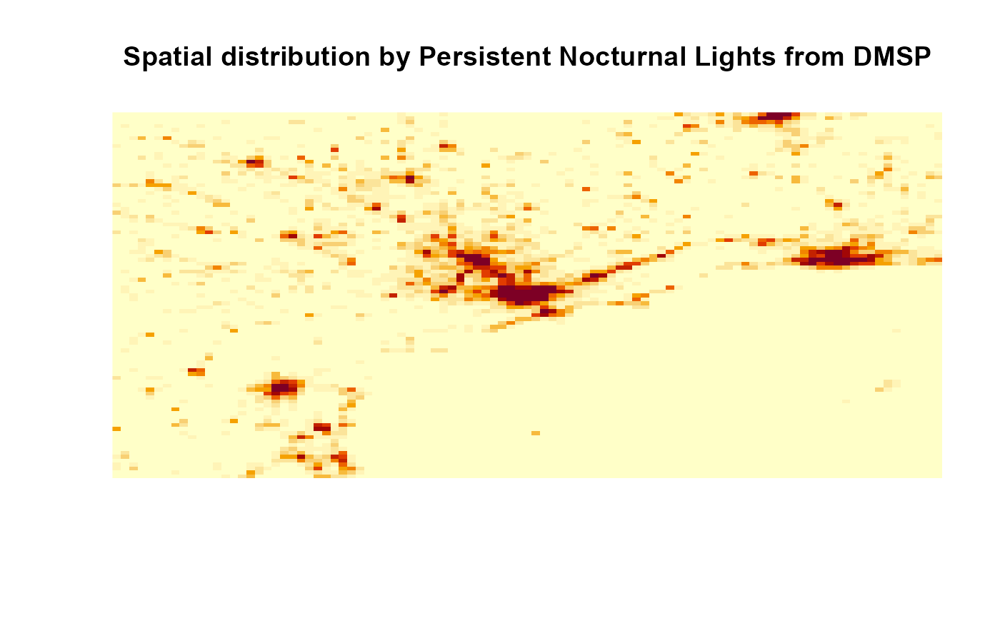

rasterSource.RdCalculate the spatial distribution by a raster
rasterSource(r, grid, nlevels = "all", conservative = T, verbose = T)
| r | input raster object |
|---|---|
| grid | grid object with the grid information |
| nlevels | number of vertical levels off the emission array |
| conservative | TRUE (default) to conserve total mass, FALSE to conserve flux |
| verbose | display additional information |
Exemple data is a low resolution cutting from image of persistent lights of the Defense Meteorological Satellite Program (DMSP) https://pt.wikipedia.org/wiki/Defense_Meteorological_Satellite_Program
Data avaliable http://www.ospo.noaa.gov/Operations/DMSP/index.html
Returns a matrix
About the DMSP and example data https://en.wikipedia.org/wiki/Defense_Meteorological_Satellite_Program
gridInfo and lineSource
#> Grid information from: C:/Users/Schuch/Documents/EmissV/inst/extdata/wrfinput_d01x <- raster::raster(paste(system.file("extdata", package = "EmissV"),"/dmsp.tiff",sep="")) test <- rasterSource(x,grid)#> Grid output: 99 columns 93 rows